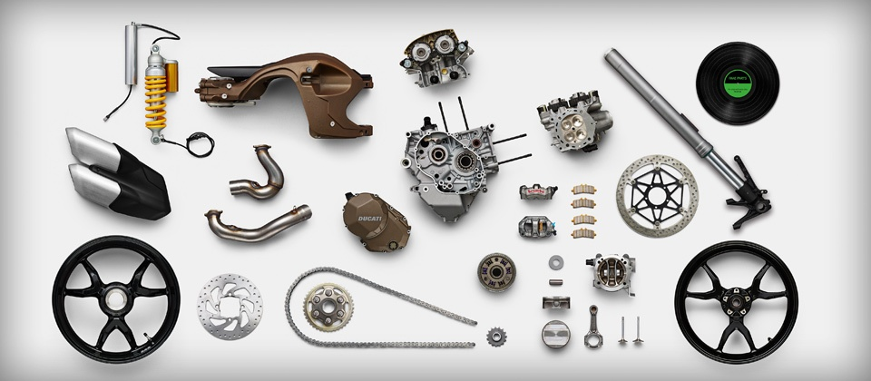

Genuine Spare Parts
Small differences make a huge difference
Ducati bikes have always been famous for the attention to detail and the commitment that the Borgo Panigale Company dedicates to safety.
That's why there is no substitute for Original Ducati Spare Parts.
For each spare part, Ducati has extremely high quality standards, demanding the highest levels of reliability and providing the parts with a 24 month warranty. Original Ducati Spare Parts are tested by the development centre and have been designed and produced so that the performance and enjoyment that Ducati bikes offer day after day remain unchanged over time. It is only by choosing Original Spare Parts that the bikes of all Ducati customers are able to maintain their true value over time, together with the attention to detail with which they are produced: performance and enjoyment are only guaranteed by the perfect harmony of all the parts.